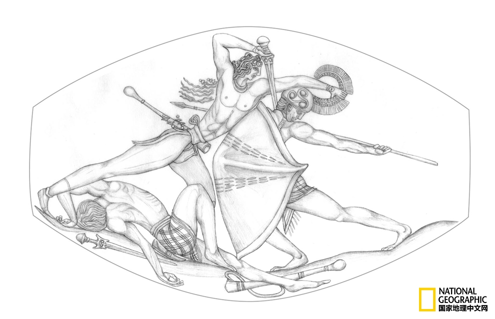

首页 > 科技 > 考古发现 > 小小宝石，内有乾坤：古希腊杰作重现天日
小小宝石，内有乾坤：古希腊杰作重现天日
内容来源：本站原创
网站编辑：kate
发布时间：2017.11.15

“皮洛斯的争战玛瑙”经过近一年的清理，细节已经清晰可见，它的长度约3.5厘米。
供图：THE DEPARTMENT OF CLASSICS, UNIVERSITY OF CINCINNATI
撰文：Sarah Gibbens
这是一块长度还不到4厘米的宝石，在数千年的历史长河中，它被石灰岩和污垢重重覆盖。当这些被清理掉之后，宝石上赫然出
现了一幅惊人的艺术作品！
研究团队在两年前就发现了这件杰作，不过当时只是把它当成了小珠子之类的东西，毕竟与它同时出土的还有1400件文物。
发现地位于希腊西南部，是一座青铜时期的战士坟墓，其年代可以追溯到3500年前。这块宝石被研究人员称为
“皮洛斯的争战玛瑙”（Pylos Combat Agate），挖掘工作的主导人之一Shari Stocker告诉我们，
它很有可能被当成了一件小首饰。
2015年，研究人员发现了这座坟墓，这是一项重大发现。墓中存放着保存完好的“狮鹫勇士”的骨架。之所以叫“狮鹫勇士”，
是因为他的陪葬品中有一块绘有“狮鹫”的饰板。狮鹫是一种传说中的动物，拥有狮子的身体，老鹰的头和翅膀。“狮鹫勇士”
的陪葬品中还有很多黄金图章戒指和一把青铜剑。这块宝石当初并不起眼，在经过了例行文物清理之后，它的艺术价值才突显出来。
辛辛那提大学的研究人员用了近一年的时间对宝石进行了清理，其表面复杂的雕刻细节终于重见天日。关于这块宝石以及墓中
其他文物的细节都发表在《西方之国》期刊上。
Stocker说：“能看到这件宝物真叫人激动万分，我简直有些喜极而泣了。”
战斗场面
想要看清雕刻细节，我们必须借助显微照相机镜头。一些地方只有半毫米。在雕刻过程中，放大镜必不可少，但Stocker表示，
迄今为止，考古学家还没有发现当时的放大工具。
辛辛那提大学的教授Jack Davis在新闻发布会上这样形容道：“这些细节小得不可思议。”
在一次采访中，Davis 进一步解释道，在之后的一千年里都没有发现过如此精细的文物，“（其他文物）和它相比，就像是
米老鼠和米开朗基罗之间的差别。”
这幅素描描绘的是“皮洛斯的争战玛瑙”上的细节。
插图：T. ROSS; COURTESY THE DEPARTMENT OF CLASSICS, UNIVERSITY OF CINCINNATI
画面描绘了一位胜利的战士，他刚刚战胜了第一个对手，又立即举剑刺入另一个敌人的喉咙。宝石上清晰地刻着全身的肌肉。
这就像古希腊的荷马史诗《伊利亚特》和《奥德赛》中气势宏伟的场景。
去年，Andrew Lawler在为《国家地理》的报道中写道：这座古墓位于伯罗奔尼撒半岛的皮洛斯，荷马曾在史诗《奥德赛》中提到
，这里是涅斯托尔国王的皇宫所在地。而宝石上所描述的画面仍是一个谜。研究人员没有找到足够的证据，将其与公元前700年
的荷马史诗联系起来。不过Stocker和研究人员相信，它描绘的应该是当时某个著名的传奇事件。
古墓之谜
研究人员表示，这件雕刻作品的精细复杂程度令历史学家不得不重新审视那个年代的工艺水平。在爱琴文明时期，人们还没有
发现同等水准的雕刻品。
狮鹫勇士葬于公元前1450年前后，这一时期，正值古希腊政治动荡。一般认为，希腊本土的迈锡尼文明战胜了克里特岛上的米
诺斯文明。而米诺斯艺术又极大地影响了希腊本土，当时很多米诺斯艺术品都是进口的或者被劫掠过来的。
关于米诺斯文明对希腊本土的影响有多深，学术界一直有所争论。研究人员认为，“狮鹫勇士”的坟墓反映了当时已有高度文
化交流。这位勇士的确切身份现在还不清楚，不过，墓中大量的米诺斯工艺品表明，墓主很有可能是米诺斯文明的一位精英，
或是醉心于米诺斯文明的迈锡尼人。
（译者：Sky4）
http://t.cn/Rj9GNf9一个西南太平洋科考队在回收研究用的水下相机时，发现了这段拍摄于克马德克群岛的有趣视频。1分19秒，
一条大白鲨叼走了包括诱饵罐在内的整套装置，并带着它游弋了一番，这给了科学家们不小的惊喜，因为在这一区域很少能见到大
白鲨。http://t.cn/Rj9SFxX #章鱼内心OS：my precious#
今天 21:30 转发 |
评论
本期#动物大考堂# 答案：郊狼(Canis latrans)，也叫草原狼、丛林狼、北美小狼，与灰狼是近亲，广泛分布于北美大陆。
恭喜@安章鱼 第一个答对！ http://t.cn/Rj9oKwN
美国国家地理 ：午休时分的#动物大考堂#今天迎来了萌萌哒四小只，好想抱回家的说[抱抱_旧]
今天 12:31 转发 | 评论
今天 18:04 转发 |
评论
#每日一图# 拥有3000万人口的山城重庆素有雾都的名号，一年中至少有100天都处在云山雾罩之中。
在美国也有一座跟它差不多的城市，那就是西雅图。
 今天 16:30 转发
今天 16:30 转发 |
评论
#下一站目的地#【去肯尼亚前一定要来看的攻略 http://t.cn/RjoX8Uz】肯尼亚可能不是大多数人会首选的旅行目的地，
但它绝对是值得一去并让你为之着迷的地方。如果你已有此打算，那就赶紧来看看我们为您精选的三个地方，无论如何都不能错过的哟[酷]
 今天 14:04 转发
今天 14:04 转发 |
评论
午休时分的#动物大考堂#今天迎来了萌萌哒四小只，好想抱回家的说[抱抱_旧]
 今天 12:31 转发
今天 12:31 转发 |
评论
【2017狮子座流星雨完全观测指南】北京时间11月18日凌晨1点前后，一年一度的狮子座流星雨将迎来极大。在远离城市灯光的黑暗地带，
观测者可以在极大值的时段，每小时看到10到25颗流星。天冷了，观星许愿，要注意保暖哦！更多指南请猛戳：http://t.cn/Rjo7RgS
 今天 11:30 转发
今天 11:30 转发 |
评论
2亿6000万年前，南极洲曾被森林覆盖，那时候的南极比现在要暖和很多，空气更潮湿。最近，人们在南极发现了13株这些古老树木的化石，
化石内保存了生物和化学信息，还有微生物和真菌化石，能够帮助研究人员了解彼时的高纬度生态系统，
从而搞清楚为什么有一些植物能从大灭绝中存活下来，而另一些则不能。
 今天 10:045 转发
今天 10:045 转发 |
评论
http://t.cn/Rj6A69a 【我们的认脸能力可能还不如一只羊】英国剑桥大学一项最新的实验研究表明，绵羊老爱跟着人跑，
是因为它们真的能认人。它们不仅能认出熟人，还能辨识陌生人不同角度的照片。科学家希望这项研究将来能对人类一些具有人
脸辨识障碍的疾病有所助益，比如亨廷顿病。http://t.cn/Rj6wrGF
今天 14:04 转发 |
评论
#下一站目的地#【安第斯山脉的绝美天空之镜】玻利维亚乌尤尼盐湖面积近1万平方公里，是世界上面积最大的盐层覆盖荒原，
比中国最知名的茶卡盐湖要大70倍。在无风情况下会形成视觉震撼的镜面效果，使大地就像天空的倒影般倩美无比，“天空之镜”
由此得名。http://t.cn/Rj6wPQf
今天 14:04 转发 |
评论
本期#动物大考堂#答案：高冠变色龙 (Chamaeleo calyptratus) ，原产于也门和沙特阿拉伯。 #你知道吗# 高冠变色龙需要大
量的阳光紫外线和钙质补充，否则容易出现代谢性病症，导致死亡。 恭喜@中年人戴德 第一个答对哦！
美国国家地理 ：午休时分的#动物大考堂#来啦~~虽然两张图看上去颜色不太一样，但这真是同一物种啊，你们懂的[doge]
11月15日 12:39
转发 | 评论
|
评论
http://t.cn/Rj9GNf9一个西南太平洋科考队在回收研究用的水下相机时，发现了这段拍摄于克马德克群岛的有趣视频。1分19秒，
一条大白鲨叼走了包括诱饵罐在内的整套装置，并带着它游弋了一番，这给了科学家们不小的惊喜，因为在这一区域很少能见到大白鲨。
http://t.cn/Rj9SFxX #章鱼内心OS：my precious#
今天 21:30 转发 |
评论
本期#动物大考堂# 答案：郊狼(Canis latrans)，也叫草原狼、丛林狼、北美小狼，与灰狼是近亲，广泛分布于北美大陆。恭喜@安章鱼
第一个答对！ http://t.cn/Rj9oKwN
美国国家地理 ：午休时分的#动物大考堂#今天迎来了萌萌哒四小只，好想抱回家的说[抱抱_旧]
今天 12:31 转发 | 评论
今天 18:04 转发 |
评论
#每日一图# 拥有3000万人口的山城重庆素有雾都的名号，一年中至少有100天都处在云山雾罩之中。在美国也有一座跟它差不多的城市，
那就是西雅图。
今天 16:30 转发 |
评论
#下一站目的地#【去肯尼亚前一定要来看的攻略 http://t.cn/RjoX8Uz】肯尼亚可能不是大多数人会首选的旅行目的地，
但它绝对是值得一去并让你为之着迷的地方。如果你已有此打算，那就赶紧来看看我们为您精选的三个地方，无论如何都不能错过的哟[酷]
今天 14:04 转发 |
评论
午休时分的#动物大考堂#今天迎来了萌萌哒四小只，好想抱回家的说[抱抱_旧]
今天 12:31 转发 |
评论
【2017狮子座流星雨完全观测指南】北京时间11月18日凌晨1点前后，一年一度的狮子座流星雨将迎来极大。在远离城市灯光的黑暗地带，
观测者可以在极大值的时段，每小时看到10到25颗流星。天冷了，观星许愿，要注意保暖哦！更多指南请猛戳：http://t.cn/Rjo7RgS
今天 11:30 转发 |
评论
2亿6000万年前，南极洲曾被森林覆盖，那时候的南极比现在要暖和很多，空气更潮湿。最近，人们在南极发现了13株这些古老树木的化石，
化石内保存了生物和化学信息，还有微生物和真菌化石，能够帮助研究人员了解彼时的高纬度生态系统，从而搞清楚为什么有一
些植物能从大灭绝中存活下来，而另一些则不能。
今天 10:045 转发 |
评论
http://t.cn/Rj6A69a 【我们的认脸能力可能还不如一只羊】英国剑桥大学一项最新的实验研究表明，绵羊老爱跟着人跑，
是因为它们真的能认人。它们不仅能认出熟人，还能辨识陌生人不同角度的照片。科学家希望这项研究将来能对人类一些
具有人脸辨识障碍的疾病有所助益，比如亨廷顿病。http://t.cn/Rj6wrGF
今天 14:04 转发 |
评论
#下一站目的地#【安第斯山脉的绝美天空之镜】玻利维亚乌尤尼盐湖面积近1万平方公里，是世界上面积最大的盐层覆盖荒原，
比中国最知名的茶卡盐湖要大70倍。在无风情况下会形成视觉震撼的镜面效果，使大地就像天空的倒影般倩美无比，“天空之镜”
由此得名。http://t.cn/Rj6wPQf
今天 14:04 转发 |
评论
本期#动物大考堂#答案：高冠变色龙 (Chamaeleo calyptratus) ，原产于也门和沙特阿拉伯。 #你知道吗# 高冠变色龙需要大量
的阳光紫外线和钙质补充，否则容易出现代谢性病症，导致死亡。 恭喜@中年人戴德 第一个答对哦！
美国国家地理 ：午休时分的#动物大考堂#来啦~~虽然两张图看上去颜色不太一样，但这真是同一物种啊，你们懂的[doge]
11月15日 12:39
转发 | 评论
|
评论

 美国国家地理 V
美国国家地理 V